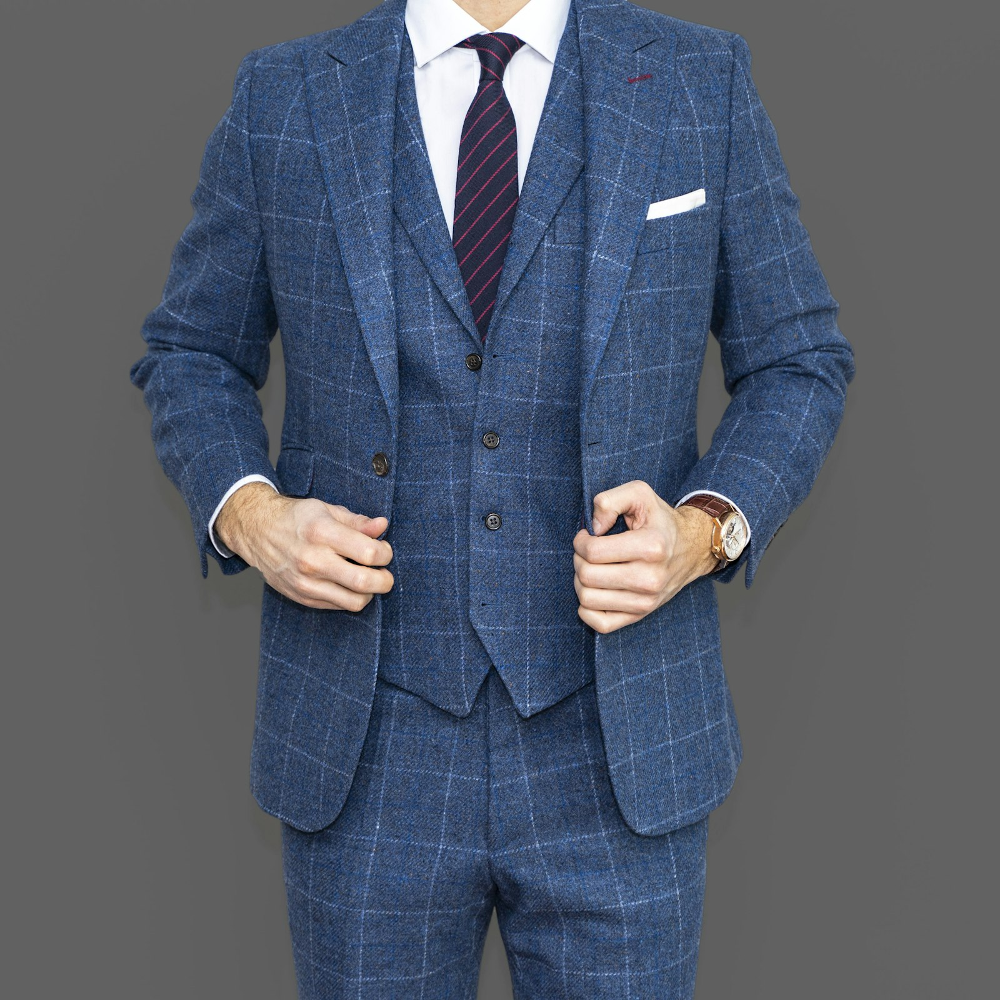
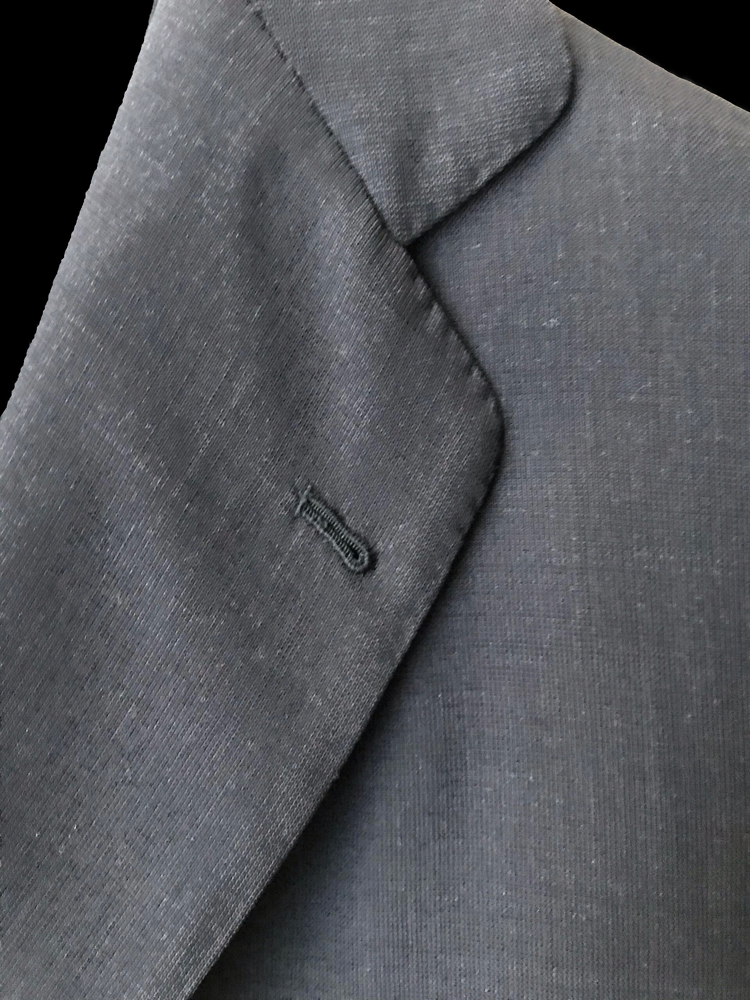
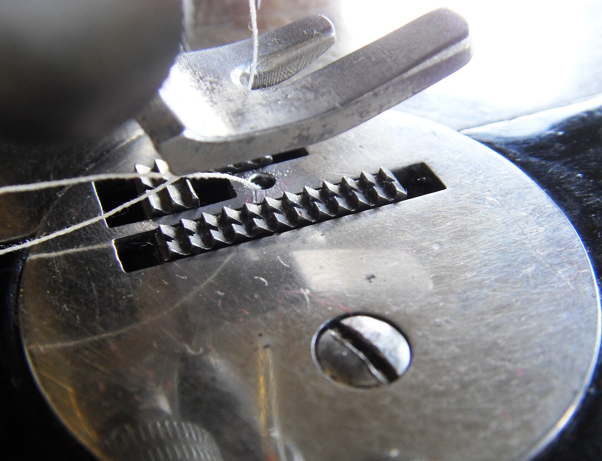
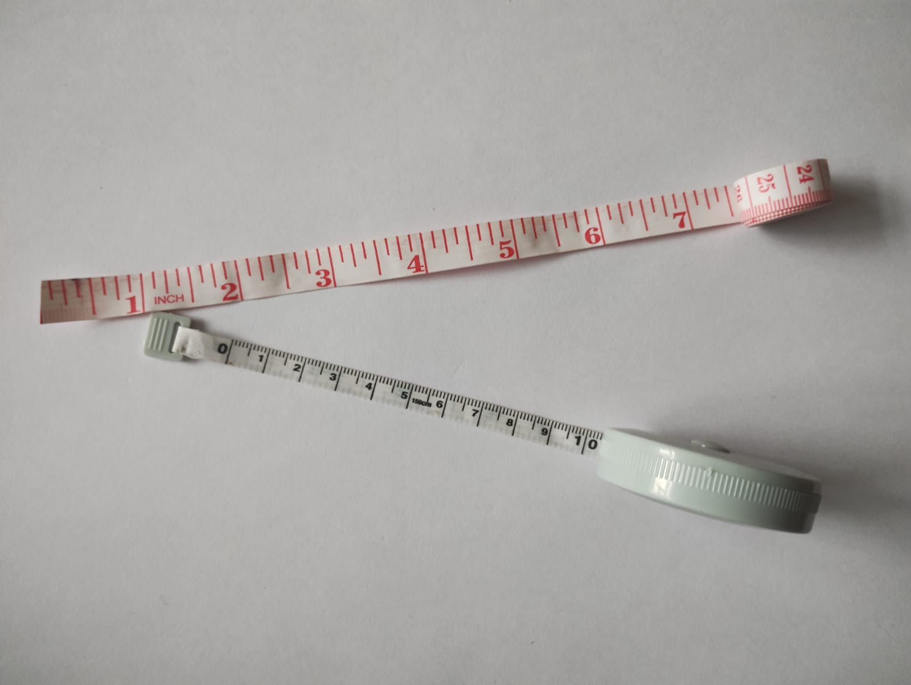

Bespoke Tailor & Alterations · Hillcrest
Made-to-measure suits, alterations and occasion wear, fitted by hand at 134 Oxford Centre, Hillcrest. Over five decades of tailoring experience sit behind every stitch.

about
Benze Tailors Hillcrest works the old way — hand-measured, hand-fitted, adjusted until it sits right on you. Over five decades of tailoring experience shape every suit, alteration and finish that leaves the shop, rated 5.0★ from 23 reviews on Google.
Five decades of tailoring experience means an eye for a shoulder line or a trouser break that only comes from doing this for that long.
Every garment is measured and fitted on you personally — consult, measure, fitting, finished — until the fit is right, not just close.
Based at 134 Oxford Centre on Old Main Road, Hillcrest. Book a slot on WhatsApp and come in when it suits you.
our work
The craft is in the close work — a true seam, a lapel that sits flat, a chalk line that starts every cut. A look at the kind of finishing that goes into bespoke tailoring.



Some imagery here is representative stock, not Benze Tailors Hillcrest's own work — client photos to follow.
how bespoke works
Four steps, the same for a first suit or a tenth. Nothing leaves the shop until it fits properly.
A quick chat about what you need — a new suit, an alteration, or an occasion to dress for — and an honest read on timeline.
Full measurements taken by hand, with fabric and cut discussed against how and where you'll actually wear it.
One or more fittings to adjust shoulder, waist, sleeve and break until everything sits the way it should.
The finished garment, pressed and ready to collect — with any last tweak sorted on the spot.
services
reputation
journal
Practical notes on fit, alterations and getting suited up for Hillcrest's biggest occasions.
The five checkpoints we look at on every fitting — shoulders, collar, sleeve, waist, break.
A season-by-season guide to booking a made-to-measure matric suit without the last-minute rush.
Simple habits that keep a made-to-measure suit looking sharp for years.
visit